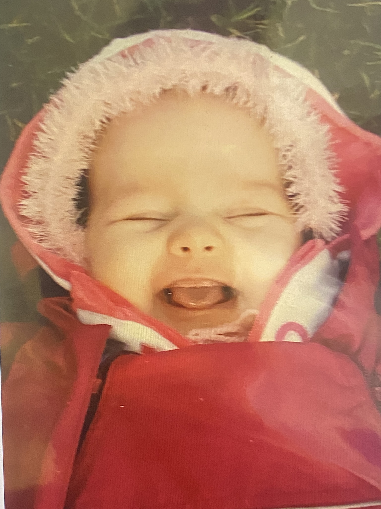
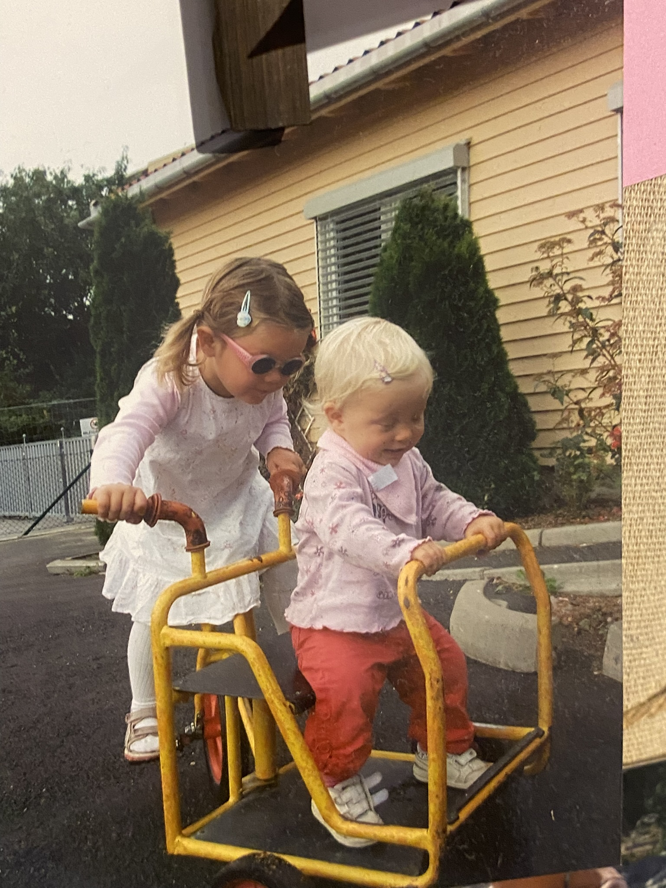
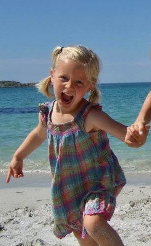

Den 1. Juli 2008 blir jeg født rundt 6 om morgenen i Tromsø, langt nord i Norge. Jeg blir født inn i en
familie med de to storesøsterene mine, mamma og pappa. Det tar bare et halvt år før vi flytter sørover,
til Kristiansand. Der er mine første minner fra. Jeg begynner i Odderøya barnehage, og er eneste
jente i mitt kull, dermed har jeg flere venner som er eldre og yngre. I barnehagen går vi mye på tur,
siden den ligger på toppen av Odderøya. Gode minner fra Kristiansand.
Jeg rekker bare å gå et halvt år på skolen før vi igjen flytter, denne gangen østover, nærmere bestemt
til Bærum. Jeg husker at jeg synes det er utroig trist å skulle forlate Kristiansand, hvor jeg trives
veldig godt. Ikke lenge etter vi flytter til Bærum blir lillebroren min Markus født, mer enn syv år
etter
meg. En skikkelig attpåklatt. Jeg vender meg til Bærum, får gode venner og prøver ut mange aktiviteter,
men faller til slutt kun for fotball som jeg spiller i mange år.




I 2019 skiller mamma og pappa seg. Jeg flytter frem og tilbake hver uke. Etterhvert starter jeg også på
ungdomsskolen og vi deles i nye klasser. Vi blir etterhvert en veldig fin klasse, 10E, og drar på flere
turer. Den beste turen blir Polen-Tyskland sommeren 2023, der vi lærer masse om 2. verdenskrig og
Holocaust. Så starter jeg på videregående høsten 2024.
Videregående blir nytt og spennende. Jeg får meg kjæreste, nye gode venner og starter i jobben min. Denne
historien ser plutselig veldig annerledes ut. I dag går jeg i klasse 2B på Nadderud videregående skole,
der trives jeg godt. Resten av historien skrives nå, så vi får se hva som skjer videre.